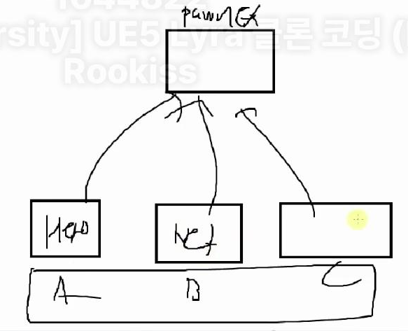
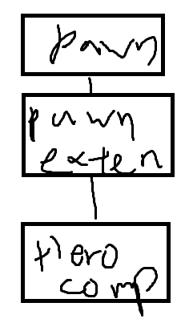
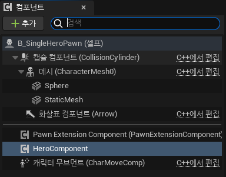
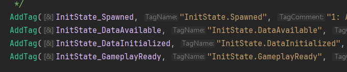
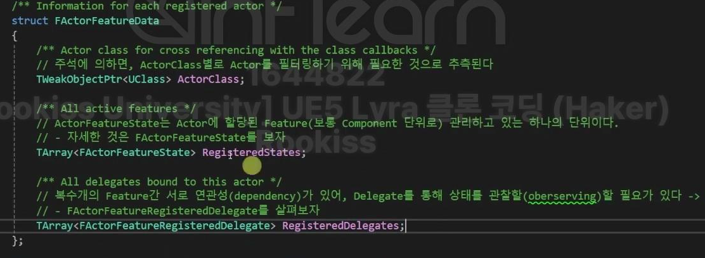
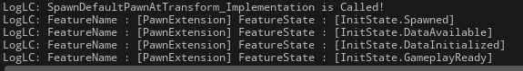
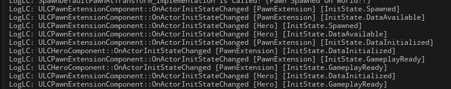
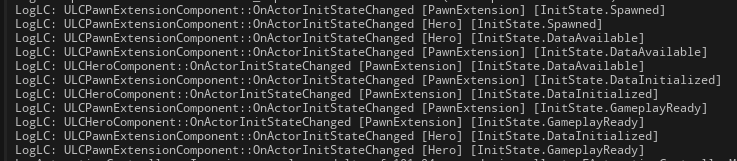

Pawn에다가 이것저것 컴포넌트 붙이면 종속성 문제가 크다고 한다
(근데 애초에 종속성 줄이려고한게 컴포넌트 방식 아닌가..?>?)
아무튼 이거 쓰면 종속성 더 줄일 수 있나보다 써보면서 느껴보자

아래서도 설명할거지만 맨 상단의 PawnExtensionComponent는 하위 컴포넌트들의 초기화 과정을 관리한다.
아래의 컴포넌트 ABC가있을때 나는 ABC의 준비가 끝나면 그 이후에 ABC순으로 초기화를 진행하고 싶다고 해보자
근데 준비가 끝나는 시점이 재각각이면 ABC순으로 초기화를 할 수가 없을 것이다.너가 생각한 당연한 방법 당연한거 맞다 델리게이트 써서 해결한다.
예시
PawnExtension이 생성되고 A,B,C가 생성되야 된다고 했을때
A가 PawnExtension보다 먼저 생겨버리면 원래는 PawnExtension이 A를 관리하고 순서를 중재해야하는데 관리해줄애도 없으니 그냥 A혼자 쭉 생성되어버릴 것
void ULCHeroComponent::CheckDefaultInitialization()
{
const FLCGameplayTags& InitTags = FLCGameplayTags::Get();
static const TArray<FGameplayTag> StateChain = { InitTags.InitState_Spawned, InitTags.InitState_DataAvailable, InitTags.InitState_DataInitialized, InitTags.InitState_GameplayReady };
ContinueInitStateChain(StateChain);
}
이를 해결하기 위한 방법이 InitStateChange이다.
InitStateChange기능을 위해 GameplayTag를 사용한다.
GameplayTag에 커스텀GameplayTag인 InitState타입?의 태그를 만들어 해당 태그로 컴포넌트들의
상태를 추적한다.
c++에서 사용하고싶은 GameplayTag를 만들려면 아래와 같이 싱글톤 구조체를 만들어서
에디터 실행 전 에셋매니저에 올려서 사용한다.
void FLCGameplayTags::InitializeNativeTags() // Call On AssetManager
{
UGameplayTagsManager& GameplayTagsManager = UGameplayTagsManager::Get();
GameplayTags.AddAllTags(GameplayTagsManager);
}
void FLCGameplayTags::AddTag(FGameplayTag& OutTag, const ANSICHAR* TagName, const ANSICHAR* TagComment)
{
// 에디터상에 태그 올리는 코드
OutTag = UGameplayTagsManager::Get().AddNativeGameplayTag(FName(TagName), FString(TEXT("(Native) ")) + FString(TagComment));
}
void FLCGameplayTags::AddAllTags(class UGameplayTagsManager& Manager)
{
/**
* GameFrameworkComponentManager init state tags
*/
AddTag(InitState_Spawned, "InitState.Spawned", "1: Actor/Component has initially spawned and can be extended");
AddTag(InitState_DataAvailable, "InitState.DataAvailable", "2: All required data has been loaded/replicated and is ready for initialization");
AddTag(InitState_DataInitialized, "InitState.DataInitialized", "3: The available data has been initialized for this actor/component, but it is not ready for full gameplay");
AddTag(InitState_GameplayReady, "InitState.GameplayReady", "4: The actor/component is fully ready for active gameplay");
}
void ULCAssetManager::StartInitialLoading()
{
Super::StartInitialLoading();
FLCGameplayTags::InitializeNativeTags(); // 에디터 실행 전에 호출된다.
}
InitStateChangeSystem은 UPawnExtensionComponent 을 사용해서 구현한다.UPawnExtensionComponent 은 Pawn 부착하는 컴포넌트고 해당 Pawn이 들고있는 모든 FeatureComponent의 초기화를 관리하는 컴포넌트이다.
FeatureComponent란 IGameFrameworkInitStateInterface 를 상속받는 컴포넌트를 말하는 것으로 보인다.

초기 구조는 위와같다.
2번째의 ULCPawnExtensionComponent 는 초기화와 관련된 모든 컴포넌트들을 관리하고 중재한다.
3번째의 ULCHeroComponent 카메라, 입력같이 플레이어가 세팅하는 부분을 처리
우리의 목표
ULCPawnExtensionComponent 의 생성을 확인하고 ULCHeroComponent 등의 다른 컴포넌트들이 ULCPawnExtensionComponent 에 부착받기를 윈한다.
UCLASS()
class LYRACLONE_API ALCCharacter : public ACharacter
{
GENERATED_BODY()
...
public:
// ULCPawnExtensionComponent를 CDO에 추가해준다.
UPROPERTY(VisibleAnywhere, BlueprintReadOnly, Category = "LC|Character")
TObjectPtr<class ULCPawnExtensionComponent> PawnExtensionComponent;
};
ALCCharacter::ALCCharacter()
{
// 모든 과정을 델리게이트로 처리할 것이기 때문에 틱은 꺼준다.
PrimaryActorTick.bStartWithTickEnabled = false;
PrimaryActorTick.bCanEverTick = false;
// create pawn ext Comp
PawnExtensionComponent = CreateDefaultSubobject<ULCPawnExtensionComponent>("PawnExtensionComponent");;
}
이후 해당 캐릭터를 상속받은 BP클래스에서 다른 컴포넌트들을 추가한다.

이렇게 하면 BP생성자는 cpp생성자보다 늦게 호출되기 때문에 반드시HeroComponent같은 다른 컴포넌트 대비 ULCPawnExtensionComponent 의 생성이 먼저 될 것을 보장 받았다.
ULCPawnExtensionComponent 초기화 과정
void ULCPawnExtensionComponent::OnRegister()
{
Super::OnRegister();
// 생성 시점의 매우 초반에 호출된다.
// OnRegister에서 Pawn에 부착하는 단계가 이루어지기때문에 아래 코드는 실패할수가 없다.
// 올바른 액터에 등록되었는지 확인
if (!GetPawn<APawn>())
{
UE_LOG(LogLC, Error, TEXT("this component has been added to a BP whose base class is not a pawn!!"));
}
// GameFrameworkComponentManager에 InitState 사용을 위해 '등록'진행
// - 등록은 상속받았던 IGameFrameworkInitStateInteface::RegisterInitStateFeature() 를 활용
RegisterInitStateFeature();
// 디버깅
UGameFrameworkComponentManager* Manager = UGameFrameworkComponentManager::GetForActor(GetOwningActor());
}
우리가 만들었던 InitState을 사용하려면

이 반드시 ‘등록’ 이라는 과정을 거쳐야 한다.
등록하기위해 IGameFrameworkInitStateInterface를 상속받은 후 RegisterInitStateFeature함수를 호출한다. 이거면 별다른거 안해도 등록 된다.
그래도 등록 과정이 어떻게 되는지 알아보자
IGameFrameworkInitStateInterface::RegisterInitStateFeature
void IGameFrameworkInitStateInterface::RegisterInitStateFeature()
{
UObject* ThisObject = Cast<UObject>(this);
AActor* MyActor = GetOwningActor();
UGameFrameworkComponentManager* Manager = UGameFrameworkComponentManager::GetForActor(MyActor);
// Feature은 일단 PawnComponent를 하나의 GameFeature단위라고 생각하자
// PhysicsCompo, audiocomp 이런것들을 생각해보면 기능단위로 Component로서 액터에
// 해당 Feature들을(Physics, audio) 할당하는 것으로 생각하면 된다.
const FName MyFeatureName = GetFeatureName(); // 인터페이스 상속받으면 오버라이딩해서 원하는 FeatureName넣는다.
if (MyActor && Manager)
{
// RegisterFeatureImplementer는 Actor에 ThisObject를 FeatureName으로 할당하는 로직
// - 내부적으로 GameFrameworkComponentManager의 ActorFeatureMap에 의해 관리된다.
// ActorFeatureMap의 Key는 FObjectKey이고
// Value는 아래 나오는 FActorFeatureData이다.
Manager->RegisterFeatureImplementer(MyActor, MyFeatureName, ThisObject);
// FObjectKey의 대상은 MyActor이고, ActorFeatureMap의 RegisteredStates에
// MyActor의 컴포넌트들이 들어간다.
}
}
UGameFrameworkComponentManager::RegisterFeatureImplementer
Actor의 State를 FeatureName을 사용해 찾아서 RegisteredState에 해당 Feature을 등록한다.
bool UGameFrameworkComponentManager::RegisterFeatureImplementer(AActor* Actor, FName FeatureName, UObject* Implementer)
{
...
FActorFeatureData& ActorStruct = FindOrAddActorData(Actor);
// 내부적으로
FActorFeatureState* FoundState = nullptr;
for (FActorFeatureState& State : ActorStruct.RegisteredStates)
{
if (State.FeatureName == FeatureName)
{
// TODO what if it's already in the desired state?
FoundState = &State;
}
}
if (!FoundState)
{
FoundState = &ActorStruct.RegisteredStates.Emplace_GetRef(FeatureName);
}
FoundState->Implementer = Implementer;
return true;
}
FActorFeatureData의 멤버들

OnRegister다음으로 Beginplay에 들어오게 된다.
void ULCPawnExtensionComponent::BeginPlay()
{
Super::BeginPlay();
// 아래 함수의 FeatureName에 Name_None을 넣으면 Actor에 등록된 모든 Feature의 모든InitState 상태를 관찰하겠다는 의미이다.
// 특정 컴포넌트만 관찰할거면 해당 컴포넌트의 FeatureName넣으면 될 것
BindOnActorInitStateChanged(NAME_None, FGameplayTag(), false);
// 내부 함수를 보니까 Register에 성공했을때 IGameFrameworkInitStateInterface::OnActorInitStateChanged를 호출하는 델리게이트를
// ActorInitStateChangedHandle에 등록한다. (가능하면 즉시호출도 하는걸로 보임)
// 다른 예시로
// BindOnActorInitStateChanged(NAME_None, FLCGameplayTags::Get().InitState_DataInitialized(), false);
// 이렇게 하면 내 모든 Feature(Component)들을 관찰을 할건데 InitState_DataInitialized단계로 넘어가는 컴포넌트만 관찰을 해달라고 요청하는 것
// 즉 모든 Feature들이 Data_Initialized단계로넘어갔을때 OnActorInitStateChanged를 호출한다.
// ULCPawnExtensionComponent는 모든 Feature에 대한 모든 State를 관리하는 컴포넌트니까 위의 코드처럼 작성한다.
// InitState_Spawned로 상태 변화
// TryToChangeInitState는 인자로 넣은 State로 상태변화를 시도한다 (실패 가능성도 있다!)
// -TryToChangeInitState는 아래와 같이 진행된다.
// 1. CanChangeInitState로 상태 변환 가능성 유무 판단.
// 2. HandleChangeInitState로 내부 상태 변경 (Feature Componnet)
// 3. 위에서 BindOnActorInitStateChanged로 Bind된 Delegate를 조건에 맞게 호출해 줌
// - LCPawnExtensionComponent의 경우, 모든 Actor의 Feature 상태 변화에 대해 OnActorInitStateChanged()가 호출됨
ensure(TryToChangeInitState(FLCGameplayTags::Get().InitState_Spawned));
// ForceUpdateInitState를 하는 함수이다 (CanChangeInitState와 HandleChangeInitState를 진행한다.).
CheckDefaultInitialization();
}
주석이 많은데 간단하게 정리하면
ULCPawnExtensionComponent에서는 OwnerActor에 붙은 모든 Feature에 대한 모든State를 감시
그리고 감시에 등록하면 InitState가 변화할때 OnActorInitStateChanged함수를 호출해줄거임
위에서 InitState가 변화가 발생했을때 BindOnActorInitStateChanged 이 함수 내부에서
ActorInitStateChangedHandle (인터페이스 내 DelegateHandler)에 등록했던 함수가 호출될 수 있음
마지막으로 CheckDefaultInitialization함수까지 살펴보자
void ULCPawnExtensionComponent::CheckDefaultInitialization()
{
// ULCPawnExtensionComponent은 FeatureComponent들의 초기화를 관장하는 Component이다.
// - 따라서 Actor에 바인딩된 Feature Comp들에 대해 CheckDefaultInitialization을 호출하게 한다. (바인딩된 FComp들에 대해 강제로 초기화 시키는 느낌)
// 위의 기능은 Interface내에 CheckDefaultInitializationForImplementers를 호출하면 수행된다.
// Implementers는 FeatureComp를 의미한다.
CheckDefaultInitializationForImplementers();
const FLCGameplayTags& InitTags = FLCGameplayTags::Get();
// 사용자 정의 InitState를 직접 넘겨줘야 한다.
static const TArray<FGameplayTag> StateChain
= { InitTags.InitState_Spawned, InitTags.InitState_DataAvailable, InitTags.InitState_DataInitialized, InitTags.InitState_GameplayReady };
// CanChangeInitState()와 HandleChangeInitState() 그리고 ChangeFeatureInitState 호출을 통한 OnActorInitStateChanged Delegate호출까지 진행해준다
ContinueInitStateChain(StateChain);
}
CheckDefaultInitializationForImplementers 함수를 호출해 OwnerActor의 모든 FeatureComponent들에 대해 CheckDefaultInitialization을 호출하게 한다.
그 다음 ContinueInitStateChain 함수를 통해 내 상태를 InitState_GameplayReady 상태까지 업데이트 한다.
ContinueInitStateChain 함수 내부를 보면 인자로 전해준 StateChain상태를 순회하면서 가능할때까지 CurrentState를 업데이트 시키는 것을 볼 수 있다.
또 HandleChangeInitState함수를 계속해서 호출해서 OnActorInitStateChanged 콜백을 받을 수 있다.
FGameplayTag IGameFrameworkInitStateInterface::ContinueInitStateChain(const TArray<FGameplayTag>& InitStateChain)
{
int32 ChainIndex = 0;
FGameplayTag CurrentState = Manager->GetInitStateForFeature(MyActor, MyFeatureName);
// For each state in chain before the last, see if we can transition to the next state
while (ChainIndex < InitStateChain.Num() - 1)
{
if (CurrentState == InitStateChain[ChainIndex])
{
FGameplayTag DesiredState = InitStateChain[ChainIndex + 1];
if (CanChangeInitState(Manager, CurrentState, DesiredState))
{
// Perform the local change
HandleChangeInitState(Manager, CurrentState, DesiredState);
// Update state and check again
CurrentState = Manager->GetInitStateForFeature(MyActor, MyFeatureName);
}
}
ChainIndex++;
}
return CurrentState;
}
지금까지의 과정
- ULCPawnExtensionComponent의 OnRegister에서 InitState를 사용하기 위해
RegisterInitStateFeature함수를 사용해GameFrameComponentManager에 등록 - Beginplay에서
BindOnActorInitStateChanged함수로 OwnerActor의 모든 FeatureComponent들의 모든 Initstate변화 관리를 위해OnActorInitStateChanged함수로 콜백 등록 - ULCPawnExtensionComponent의 상태를 InitState_Spawned로 변경 시도
CheckDefaultInitialization함수에서 하위의 FeatureComponent들이CheckDefaultInitialization함수 호출하게 처리 (내부에서 ContinueInitStateChain)- 결과적으로 ULCPawnExtensionComponent의 상태를 InitState_GameReady상태로 만듬

OnActorInitStateChanged 에다가 로그 찍으면 잘찍히는거 볼 수있다.
아래는 InitState는 뭐고 왜 ULCPawnExtensionComponent 를 사용해서 초기화를 하지~~? 라는 의문을 풀 수 있는 CanChangeInitState함수이다.
bool ULCPawnExtensionComponent::CanChangeInitState(UGameFrameworkComponentManager* Manager, FGameplayTag CurrentState,
FGameplayTag DesiredState) const
{
// true 면 CurrentState에서 DesireState로 넘어가는 함수
check(Manager);
APawn* Pawn = GetPawn<APawn>();
const FLCGameplayTags& InitTags = FLCGameplayTags::Get();
// InitState_Spawned초기화
if (!CurrentState.IsValid() && DesiredState == InitTags.InitState_Spawned)
{
// Pawn이 잘 세팅되어있으면 Spawned로 넘어간다.
if (Pawn)
{
return true;
}
}
// Spawned -> DataAvailable
if (CurrentState== InitTags.InitState_Spawned && DesiredState == InitTags.InitState_DataAvailable)
{
if (!PawnData)
{
return false;
}
// LocallyControlled인 Pawn이 Controller가 없으면 에러
const bool bIsLocallyControlled = Pawn->IsLocallyControlled();
if (bIsLocallyControlled)
{
if (!GetController<AController>())
{
return false;
}
}
return true;
}
// DataAvailable -> DataInitialized
if (CurrentState== InitTags.InitState_DataAvailable && DesiredState == InitTags.InitState_DataInitialized)
{
// Pawn에 바인드된 모든 Feature들이 DataAvailable상태일 때 DataInitialized로 넘어감.
return Manager->HaveAllFeaturesReachedInitState(Pawn, InitTags.InitState_DataAvailable);
}
// DataInitialized -> GameplayReady
if (CurrentState== InitTags.InitState_DataInitialized && DesiredState == InitTags.InitState_GameplayReady)
{
return true;
}
return false;
}
ContinueInitStateChain 내에서 CanChangeInitState 함수와 HandleChangeInitState 함수를 반복해서 호출하게되는데
위의 CanChangeInitState함수 구현부를 보면 HaveAllFeaturesReachedInitState 에서 모든 Feature의 상태를 체크한 후 다음상태로 넘어가기 때문에 안전한 게임 플로우를 보장받을 수 있다.
HeroComponent
얘가 뭔 특별한 역할을 하는것을 설명하기 보다는 ULCPawnExtensionComponent가 관리하는 FeatureComponent의 하나라는 것에 집중한다.
이친구도 Feature이고 IGameFrameworkInitStateInterface 를 상속받은 클래스이기 때문에
ULCPawnExtensionComponent 와 비슷한 초기화 과정을 수행한다.
void ULCHeroComponent::BeginPlay()
{
Super::BeginPlay();
// ULCPawnExtensionComponent의 모든 상태를 추적한다.
BindOnActorInitStateChanged(ULCPawnExtensionComponent::NAME_ActorFeatureName, FGameplayTag(), false);
// InitState_Spawned로 초기화
ensure(TryToChangeInitState(FLCGameplayTags::Get().InitState_Spawned));
// Forceupdate진행
CheckDefaultInitialization();
}
BindOnActorInitStateChanged 의 인자로 들어있는 ULCPawnExtensionComponent::NAME_ActorFeatureName 이 ULCPawnExtensionComponent 과 다른것을 확인할 수 있다.
ULCPawnExtensionComponent 에서는 Name_None으로 하위의 모든 FeatureComp의 상태를 추적하려고 했었고, 여기서는 ULCPawnExtensionComponent 의 상태를 추적한다.
여기서는 CheckDefaultInitializationForImplementers(); 이 함수가 호출이 되지 않은걸 확인할 수 있는데
당연한게 HeroComponent는 ULCPawnExtensionComponent 의 Implementer이기 때문
HeroComponent 도 CanChangeInitState 를 구현해야한다.
다른 점을 확인하면 Spawned -> DataAvailable 단계에서 Controller가 아니라 PlayerState를 확인하는거을 볼 수 있다.
그리고 DataAvailable -> DataInitialized 단계를 확인하면ULCPawnExtensionComponent가 InitState_DataInitialized상태가 되는 것을 기다리는데
위의 ULCPawnExtensionComponent::CanChangeInitState 를 확인해보면InitState_DataAvailable 상태에서 모든 하위 Feature들이 InitState_DataAvailable 상태가 되는 것을 기다린 다음에 InitState_DataInitialized 로 넘어가는것을 확인 할 수 있다.
따라서 의도된 Flow를 보장하고있다.
bool ULCHeroComponent::CanChangeInitState(UGameFrameworkComponentManager* Manager, FGameplayTag CurrentState,
FGameplayTag DesiredState) const
{
ALCPlayerState* LCPS = GetPlayerState<ALCPlayerState>();
...
// Spawned -> DataAvailable
if (CurrentState== InitTags.InitState_Spawned && DesiredState == InitTags.InitState_DataAvailable)
{
if (!LCPS)
{
return false;
}
return true;
}
// DataAvailable -> DataInitialized
if (CurrentState== InitTags.InitState_DataAvailable && DesiredState == InitTags.InitState_DataInitialized)
{
// ULCPawnExtensionComponent가 InitState_DataInitialized상태로 넘어갔으면 그때 this도 InitState_DataInitialized로 넘어감
return LCPS && Manager->HasFeatureReachedInitState(Pawn, ULCPawnExtensionComponent::NAME_ActorFeatureName, InitTags.InitState_DataInitialized);
}
...
return false;
}
void ULCHeroComponent::OnActorInitStateChanged(const FActorInitStateChangedParams& Params)
{
if (Params.FeatureName == ULCPawnExtensionComponent::NAME_ActorFeatureName)
{
// ULCPawnExtensionComponent의 State가 InitState_DataInitialized인것을 확인하고
// HeroComponent도 InitState_DataInitialized로 변경한다.
const FLCGameplayTags& InitTags = FLCGameplayTags::Get();
if (Params.FeatureState == InitTags.InitState_DataInitialized)
{
CheckDefaultInitialization();
}
}
}
그런데 문제가 있다.
모든 하위 Feature들이 InitState_DataAvailable 가 되는것을 기다린다고 했는데
그걸 어딘가에서 계속 관찰하고 콜백을 받아야 한다.
그 콜백은 ULCPawnExtensionComponent::OnActorInitStateChanged 여기서 처리한다.
void ULCPawnExtensionComponent::OnActorInitStateChanged(const FActorInitStateChangedParams& Params)
{
if (Params.FeatureName != NAME_ActorFeatureName) // 하위 Feature들만 받겠다는 뜻
{
// ULCPawnExtensionComponent::CanChangeInitState에 다른 Feature들의 상태가 DataAvailable로 변하는지 관찰하여 Sync를 맞추는 구간이 있다.
// 이를 가능하게 하기 위해 여기서 지속적으로 CheckDefaultInitialization을 호출하여 상태를 확인한다.
const FLCGameplayTags& InitTags = FLCGameplayTags::Get();
if (Params.FeatureState == InitTags.InitState_DataAvailable)
{
CheckDefaultInitialization();
}
}
}
보면 하위 Feature들의 정보가 해당 함수에 들어왔을때 해당 Feature의 InitState가InitState_DataAvailable 이면 CheckDefaultInitialization 을 호출해서 아래의 과정을 실행하는 것!
void ULCPawnExtensionComponent::CheckDefaultInitialization()
{
CheckDefaultInitializationForImplementers();
const FLCGameplayTags& InitTags = FLCGameplayTags::Get();.
static const TArray<FGameplayTag> StateChain = { InitTags.InitState_Spawned, InitTags.InitState_DataAvailable, InitTags.InitState_DataInitialized, InitTags.InitState_GameplayReady };
ContinueInitStateChain(StateChain);
}
그럼 어? OnActorInitStateChanged 에서 나 말고도 다른 Feature들의 State도 받아요?? 라고 할 수 있는데
함수를 좀 살펴보면 확인이 가능! (주석친부분만 보자)
우선 결론부터 말하면 BindOnActorInitStateChanged(NAME_None, FGameplayTag(), false);
우리가 ULCPawnExtensionComponent 에서 하위의 모든 Feature들을 State들을 추적하기로 했으니까 OnActorInitStateChanged 에서 하위 Feature의 상태를 받게 되는 것이다. (그래도 못믿으면 로그찍어)
void UGameFrameworkComponentManager::ProcessFeatureStateChange(AActor* Actor, const FActorFeatureState* StateChange)
{
StateChangeQueue.Emplace(Actor, *StateChange);
if (CurrentStateChange == INDEX_NONE)
{
CurrentStateChange = 0;
while (CurrentStateChange < StateChangeQueue.Num())
{
// 여기서 OnActorInitStateChanged호출!
CallFeatureStateDelegates(StateChangeQueue[CurrentStateChange].Key, StateChangeQueue[CurrentStateChange].Value);
CurrentStateChange++;
}
StateChangeQueue.Empty();
CurrentStateChange = INDEX_NONE;
}
}
위의 함수는 아래의 UGameFrameworkComponentManager::ChangeFeatureInitState함수에서 호출되는 것을 볼 수 있다.
bool UGameFrameworkComponentManager::ChangeFeatureInitState(AActor* Actor, FName FeatureName, UObject* Implementer, FGameplayTag FeatureState)
{
if (Actor == nullptr || FeatureName.IsNone() || !FeatureState.IsValid())
{
// TODO Ensure?
return false;
}
FActorFeatureData& ActorStruct = FindOrAddActorData(Actor);
FActorFeatureState* FoundState = nullptr;
// 등록된 FeatureState들을 순회하면서 (InitState랑은 관계X)
for (FActorFeatureState& State : ActorStruct.RegisteredStates)
{
if (State.FeatureName == FeatureName)
{
FoundState = &State;
}
}
if (!FoundState)
{
FoundState = &ActorStruct.RegisteredStates.Emplace_GetRef(FeatureName);
}
FoundState->CurrentState = FeatureState;
FoundState->Implementer = Implementer;
ProcessFeatureStateChange(Actor, FoundState);
return true;
}
그리고 이 함수는GameFrameworkInitStateInterface::ContinueInitStateChain 여기서 호출한다!!!
흐름을 파악할 수 있따!
정리하면 모든 Feature들은 OnActorInitStateChanged 에서 자신이 추적중인 모든 Feature들의 상태의 변화를 콜백으로 받는다는 것!
지금까지의 구조를 보면ULCPawnExtensionComponent 는 하위의 어떠한 컴포넌트도 알 필요가 없는것을 확인할 수 있다.
코드의 결합도가 매우 느슨해 어떠한 코드의 흐름을 볼때 각 Feature들만 확인해도 된다는 뜻이다.
상속관계는 아니지만 부모의 관계를 적절하게 가지고 있다고 생각한다.
사실 위의 코드만 가지고는 의도된 InitState프로세스를 완료할수 없다.
아직 Pawn의 Possess가 호출되기 전이라 Controller가 없어서ULCPawnExtensionComponent::CanChangeInitState 는 Spawned -> DataAvailable 과정에서 막히고
// Spawned -> DataAvailable
if (CurrentState== InitTags.InitState_Spawned && DesiredState == InitTags.InitState_DataAvailable)
{
if (!PawnData)
{
return false;
}
// LocallyControlled인 Pawn이 Controller가 없으면 에러
// 기존에는 LocallyControlled가 아니여서 되었던것
const bool bIsLocallyControlled = Pawn->IsLocallyControlled();
if (bIsLocallyControlled)
{
if (!GetController<AController>())
{
return false;
}
}
return true;
}
PlayerController가 없으면 PlayerState도 없기에
(GameMode에서 HeroPawn을 DefaultPawn으로 설정하도록 유도했었으니까 PlayerController가 맞음)ULCHeroComponent::CanChangeInitState 도 Spawned -> DataAvailable 과정에서 막히게 된다.
// Spawned -> DataAvailable
if (CurrentState== InitTags.InitState_Spawned && DesiredState == InitTags.InitState_DataAvailable)
{
if (!LCPS)
{
return false;
}
return true;
}
그럼 Possess이후 나머지 과정을 처리하면 될 것이다.
그러기 위해 Lyra에서는 Possess가 되었음을 반드시 보장받는 함수APawn::SetupPlayerInputComponent 를 사용해 나머지 과정을 수행했다.
void ALCCharacter::SetupPlayerInputComponent(UInputComponent* PlayerInputComponent)
{
Super::SetupPlayerInputComponent(PlayerInputComponent);
// 반드시 PlayerController가 존재하는 상태이기 때문에 Spawned->DataAvailable상태를 넘어갈 수 있다.
PawnExtensionComponent->SetupPlayerInputComponent();
}
=========================================================================================
void ULCPawnExtensionComponent::SetupPlayerInputComponent()
{
// InitStateForceUpdate
CheckDefaultInitialization();
}
플로우 정리
ExtComp Beginplay에서
ExtComp가spawned로 변신 성공
(ExtComp::OnActorInitStateChanged)
beginplay 마지막에 CheckDefaultInitialization호출
CheckDefaultInitialization안에서 CheckDefaultInitializationForImplementers을 호출하나
Implementers들이 아직 Beginplay 전이라서 아무 변화 없음
ExtComp 본인의 ContinueInitStateChain호출하면서 Spawned -> DataAvailable 검사
- LocallyControlled가 아닐때
ExtComp가 DataAvailable로 변신 성공
(ExtComp::OnActorInitStateChanged)
DataAvailable -> DataInitialized 검사
HaveAllFeaturesReachedInitState로 모든하위 FeatureComp들이 InitState_DataAvailable인지 검사
당연하게도 전부다 실패 HeroComp의 State는 Beginplay전이라 None임 - LocallyControlled일때
PlayerController 바인딩 안되서 실패
HeroComp의 Beginplay에서
HeroComp가 spawned로 변신 성공
(ExtComp::OnActorInitStateChanged)
CheckDefaultInitialization에서 ContinueInitStateChain호출
HeroComp의 Spawned -> DataAvailable검사하나
PlayerState없어서 실패
엔진 내부에서 플레이어 디폴트 폰의 Possesses호출 PlayerState생성 및 PlayerController 바인딩
엔진 내부에서 플레이어 디폴트 폰의 SetupPlayerInputComponent호출
SetupPlayerInputComponent함수 내부에서 ExtComp::SetupPlayerInputComponent호출
ExtComp의 SetupPlayerInputComponent에서 CheckDefaultInitialization 호출
CheckDefaultInitializationForImplementers을 다시 호출
HeroComp가 Spawned -> DataAvailable검사 및 PlayerState가 있으므로
HeroComp가 DataAvailable로 변신 성공
(ExtComp::OnActorInitStateChanged,
ExtComp::OnActorInitStateChanged내부에서
[HeroPawn의 상태 == InitTags.InitState_DataAvailable] 분기에 걸려서
ExtComp::CheckDefaultInitialization 호출----
CheckDefaultInitializationForImplementers을 다시 호출
HeroComp가 DataAvailable -> DataInitialized 시도하나
[(ExtComp의 상태 == InitTags.InitState_DataInitialized)]함수가 false를 반환해서
변신에 실패
ExtComp가 아직 OnActorInitStateChanged에서 이어진 CheckDefaultInitialization이였으니까 스스로 ContinueInitStateChain호출
ExtComp가 DataAvailable -> DataInitialized 시도
[모든 하위 FeatureComp들이 InitState_DataAvailable인지 검사]
HeroComp의 상태가 DataAvailable으니까 true반환
ExtComp가 가 DataInitialized로 변신 성공
Chain에서 계속 CanChangeInitState호출 및 DataInitialized -> GameplayReady통과
ExtComp가 가 GameplayReady로 변신 성공
ExtComp::CheckDefaultInitialization함수 탈출----
ExtComp의 OnActorInitStateChanged 함수 탈출
(ExtComp::OnActorInitStateChanged,
인자로 들어온 InitState는 아직 GameplayReady가 아니라 DataInitialized
HeroComp::OnActorInitStateChanged
인자로 들어온 InitState는 아직 GameplayReady가 아니라 DataInitialized
이제서야 HeroComp는 ExtComp가 DataInitialized로 변했다는 콜백을 받음
[ExtComp가 DataInitialized상태인지 확인 (현재는 GameplayReady상태지만 함수로 들어온 인자는 아직 DataInitialized이다.)]
통과 및 HeroComp자신의 CheckDefaultInitialization호출
[(ExtComp의 상태 == InitTags.InitState_DataInitialized)]함수가 true반환
HeroComp가 DataInitialized로 변신 성공
Chain에서 계속 CanChangeInitState호출 및 DataInitialized -> GameplayReady통과
(ExtComp::OnActorInitStateChanged, HeroComp::OnActorInitStateChanged) ExtComp의 GameplayReady변화 콜백
(ExtComp::OnActorInitStateChanged) HeroComp의 DataInitialized이다변화 콜백
(ExtComp::OnActorInitStateChanged) HeroComp의 GameplayReady변화 콜백

만약 LocallyControlled가 true라면

이렇게 나올 것이다.
쉽게 정리하면 ExtComp와 HeroComp의 Beginplay에서 어느정도 InitState가 업데이트 되다가
PlayerState와 PlayerController때문에 잠시 멈췄다가
PlayerController의 Possess단계에서 나머지 InitState가 업데이트 된다.
아래는 지금까지의 진행 과정에서 InitState의 실사용 예시이다
void ULCHeroComponent::HandleChangeInitState(UGameFrameworkComponentManager* Manager, FGameplayTag CurrentState,
FGameplayTag DesiredState)
{
const FLCGameplayTags& InitTags = FLCGameplayTags::Get();
// DataAvailable -> DataInitialized성공 단계
if (CurrentState == InitTags.InitState_DataAvailable && CurrentState == InitTags.InitState_DataInitialized)
{
APawn* Pawn = GetPawn<APawn>();
ALCPlayerState* LCPS = GetPlayerState<ALCPlayerState>();
if (!ensure(Pawn && LCPS))
{
return;
}
const bool bIsLocallyControlled = Pawn->IsLocallyControlled();
const ULCPawnData* PawnData = nullptr;
if (ULCPawnExtensionComponent* PawnExtensionComponent = ULCPawnExtensionComponent::FindPawnExtensionComponent(Pawn))
{
PawnData = PawnExtensionComponent->GetPawnData<ULCPawnData>();
}
}
}
HeroComp의 DataAvailable -> DataInitialized 상태 전환의 CanChangeInitState 시험을 통과했을때
호출된는 HandleChangeInitState 에서는 PlayerState를 필요로 하기 때문에 PlayerState가 반드시 있음을 보장받아야한다.
쉽게정리
- PawnExtensionComp는 하위 Feature들을 관리하는 컴포넌트이다.
- OnRegister단계에서 Feature들을 ‘등록’하고
UGameFrameworkComponentManager에 액터를 ‘등록’한다. - PawnExtensionComp→CheckDefaultInitialization으로 초기화를 시작한다.
- ContinueInitStateChain가 CanChangeInitState로 검사 후 HandleChangeInitState을 호출하면서
다음 State로 나아간다. - PawnExtensionComp은 모든 Feature의 모든 State들에 대해 감시중이기 때문에OnActorInitStateChanged으로 콜백을 받고, 하위 Feature들은 감시 등록한 Feature에 대해 OnActorInitStateChanged으로 콜백을 받는다.
- 마지막 단계까지 끝나면 초기화 끝